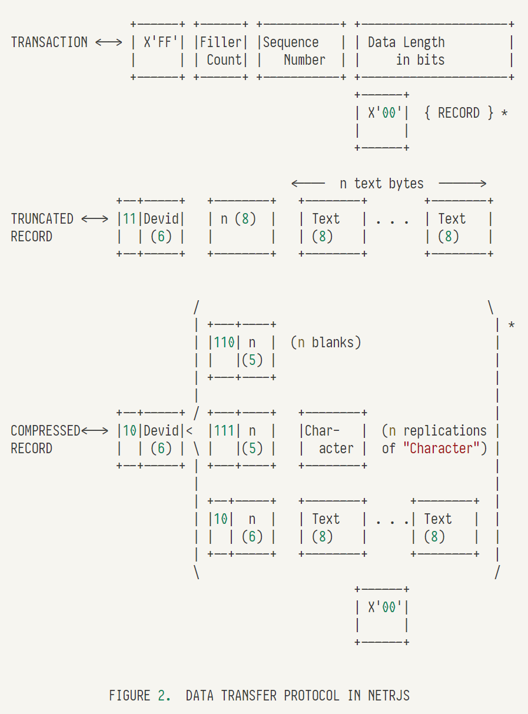
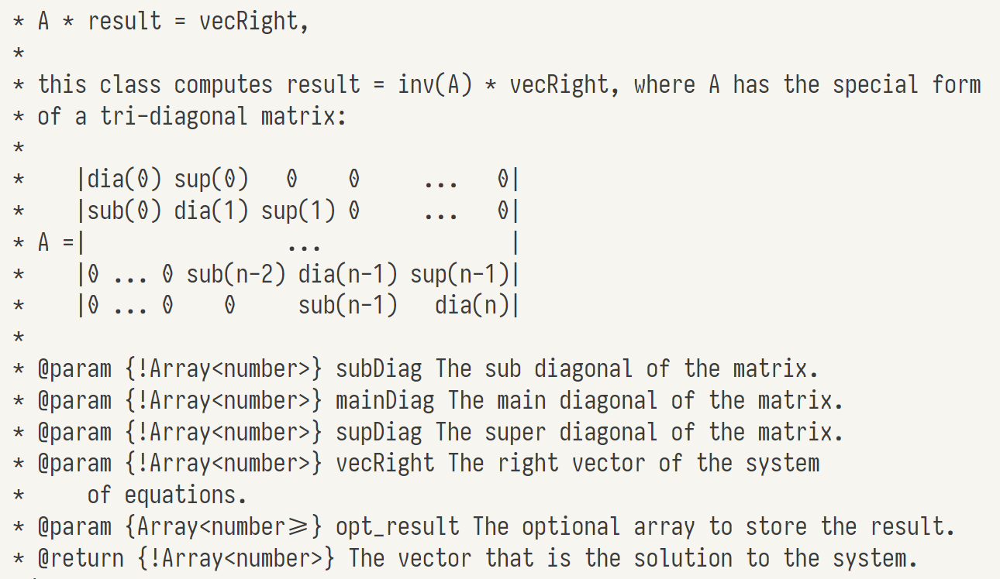
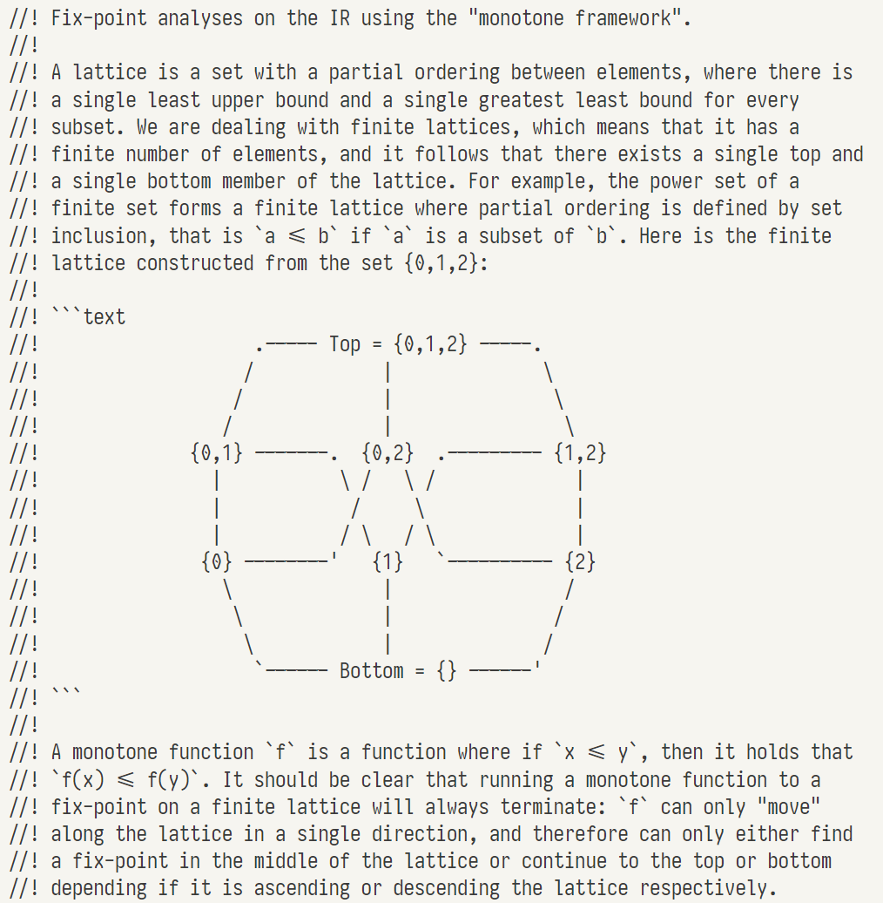
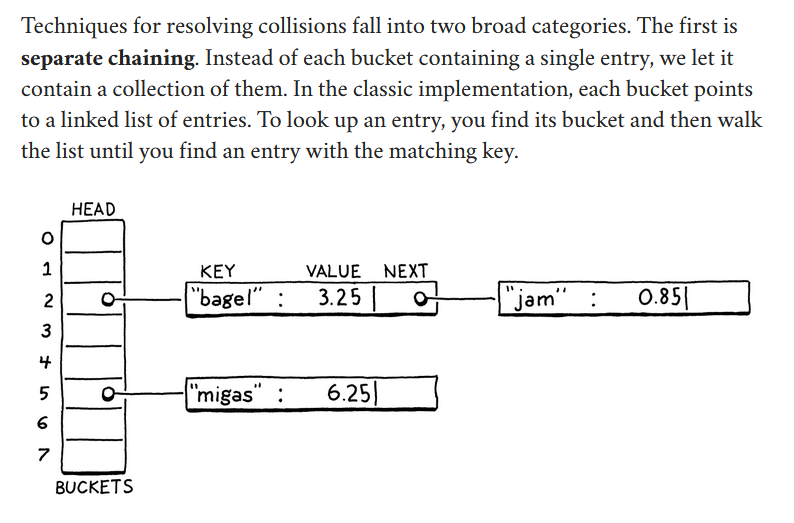

Note:
- [Green] indicates that the code was
successfully reproduced in the system.
- [Yellow] indicates that the code
was partially reproduced in the system.
- [Red] indicates that the code was
not reproduced in the system.
[D1] UW CSEP 521 Applied Algorithms
What data structure does the diagram show? A directed graph with ‘outdegree’ of one (each node only has 1 outgoing edge).
Revisualization(s)
- [Graph] A graph is mapped to a
node-link visual graph.
Simplification(s)
- [Hide] In the graph, hide the values
of its nodes.
Annotation(s)
- [Encircle] In the graph, encircle a
region of neighboring nodes.
[D2] UIUC CS 473 Algorithms
What data structure does the diagram show? A set of jobs with a processing time and a set of machines with assigned jobs.
Revisualization(s)
- [Sequence 1] Each job is shown in a
stack (a vertical sequence).
- [Sequence 2] The machines are
ordered in a horizontal sequence.
Simplification(s)
- [Hide] In each stack of
jobs/sequence, hide the values of its values.
- [Abbreviate] In the list of
machines/sequence, abbreviate the middle range.
Annotation(s)
- [Label location] In the
sequence, label index locations in-place of the items.
- With the last location being labeled with an identifier
(‘m’)
- [Label 1] In the stack of jobs,
label items with an index identifier (j).
- [Label 2] In the sequence, label the i’th
machine’s location with an index identifier (i).
[D3] MIT 6.006 Introduction to Algorithms
What data structure does the diagram show? Hash table implemented as a direct access array. At top is a ‘long’ sequence of slots
(length is u). These values get compressed to a smaller sequence of slots (middle diagram) using a hash
function (length is m) in which each slot contains a bucket of values to store multiple items (bottom
diagram).
Revisualization(s)
- [Sequence 1] An array is shown as a
horizontal sequence of values.
- [Sequence 2] An array is also shown
as a vertical stack/sequence.
- [Graph] A pointer from array to stack.
Simplification(s)
- [Clump] [1st, 2nd diagram] In sequence, clump all items together.
- [Hide] [3rd diagram] In stack, hide
the value of all items.
Annotation(s)
- [Label location] [1st,
2nd diagram] In sequence, label literal and named locations of start and end items.
- [Label 1] [3rd diagram] In stack,
use identifier in place of its value for both items.
- [Label 2] [1st, 2nd diagram] Label
identifier (‘a’, ‘b’) above the variable’s value in the
sequence.
- [Connection] [1st, 2nd
diagram] Label arrows for data transformation between the diagrams.
[D4] Introduction to Algorithms
What data structure does the diagram show? An array being split and sorted in merge sort.
Revisualization(s)
- [Array] An array is
shown as a horizontal sequence of values. States are shown as a call graph.
Simplification(s)
Annotation(s)
- [Label location] In
sequence, label literal locations of all items.
- [Label] In sequence, indices p, q, and r are
labeled by their identifier.
[D5] Algorithm Design
What data structure does the diagram show? A Huffman tree.
Revisualization(s)
- [Tree] The binary tree is shown as a vertical
tree with the root at top.
Simplification(s)
- [Hide] In the tree, hide the values
of all items.
Annotation(s)
- [Style] In the tree,
style two paths between nodes.
- [Label] In the tree, add a
description pointing to two nodes.
[D6] RFCs 1500

What data structure does the diagram show? Bytes.
Revisualization(s)
- [Sequence] Bytes are shown as a
sequence of horizontal blocks separated by spaces.
Simplification(s)
- [Clump] In the sequence, clump
together ranges of bytes.
- [Abbreviate] [2nd diagram] In the sequence,
abbreviate a range.
Annotation(s)
- [Label] In the sequences, label the
field name corresponding to ranges of bytes.
- [Label Length] [2nd diagram] In the sequence,
use extent arrows to label the symbolic length of a range.
[D7] The Linux Kernel
What data structure does the diagram show? Bits.
Revisualization(s)
- [Sequence 1] Bits are
shown as a horizontal sequence.
- [Sequence 2] Two diagrams
horizontally next to one another with an arithmetic operator in between.
Simplification(s)
- [Hide] In the sequence, hide values of all
items.
Annotation(s)
- [Label] In the sequence, use a glyph in place
of the items (i.e. ‘a’, ‘b’, ‘d’)
- [Connect] Show data causality between the
diagrams.
[D8] Chromium
What data structure does the diagram show? A matrix.
Revisualization(s)
- [Grid] Matrix is shown as a grid.
Simplification(s)
- [Hide] Hide values of
all items.
Annotation(s)
- [Label 1] Label identifier in-place
of all items.
- [Label 2] Add a custom description
(‘col’, ‘row’) next to the first column and row in the grid.
- [Label location] Label literal indices of the
columns and rows in the grid.
[D9] Crafting Interpreters
What data structure does the diagram show? An array of
strings.
Revisualization(s)
- [Sequence] Array as a horizontal sequence.
Simplification(s)
Annotation(s)
[D10] Software Design by Example
What data structure does the diagram show? An array of
strings.
Revisualization(s)
- [Sequence] Array as a horizontal
sequence.
Simplification(s)
Annotation(s)
- [Label location] In sequence, label
indices of items.
- [Connection] Show data
transformation between arrays.
[D11] UW CSEP 521 Applied Algorithms
What data structure does the diagram show? A list.
Revisualization(s)
- [Sequence 1] Arrays are shown as a
horizontal sequence.
- [Sequence 2] Arrays are arranged
in a vertical sequence.
Simplification(s)
- [Clump 1] In sequence, clump
everything
except the range.
- [Clump 2] In the sequence, clump a range of
items.
Annotation(s)
- [Label] In the sequence, label a property of
the values in the selected range.
[D12] UIUC CS 473 Algorithms
What data structure does the diagram show? A binary tree.
Revisualization(s)
- [Tree] Tree is represented as a vertical tree
with roots at the top.
Simplification(s)
- [Hide] Tree hides values of all its
nodes.
- [Clump] Tree clumps subtree
together.
- [Fragment] Show a subtree (extending
edge at the top)
Annotation(s)
- [Style] Tree highlights a path
connecting two nodes.
- [Label 1] Tree marks a value beside
each node.
- [Label 2] Tree labels an identifier in place of
nodes and clumps.
- [Connection] Show causality arrows
between the trees.
[D13] MIT 6.006 Introduction to Algorithms
What data structure does the diagram show? A linked list head with a length property, and linked list nodes.
Revisualization(s)
- [Graph] A linked list is shown as a
graph where edges are pointers.
Simplification(s)
- [Abbreviate] In the graph,
abbreviate a
path.
- [Hide] In the graph, hide values of each
node.
Annotation(s)
- [Label 1] The node head’s
length
attribute is labeled with ‘length’ and its pointer with ‘head’.
- [Label 2] In
the graph, nodes are
labeled with their location along a path.
[D14] Introduction to Algorithms
What data structure does the diagram show? An array.
Revisualization(s)
- [Sequence] An array is shown as a horizontal
sequence.
Simplification(s)
- [Partition] In the sequence, partitions of
three are clumped together.
Annotation(s)
- [Label] In the sequence, label
symbolic
location of segments.
- [Label] In the sequence, label a
description under each segment.
- [Style] In the sequence, partitions
of
three are styled in alternating colors.
- [Connection] In the sequence, show
data
provenance between the partitions.
[D15] Algorithm Design
What data structure does the diagram show? An array.
Revisualization(s)
- [Sequence] An array is shown as a
horizontal sequence.
- [Sequence] [Right diagrams] The sequences of
the same length are aligned against each other.
Simplification(s)
- [Clump 1] [Right diagrams] The
sequence
is clumped in two partitions.
- [Clump 2] [Left diagram] The
sequence
clumped together all its values.
Annotation(s)
- [Style] [Right diagrams] The
sequence
has a styled background for a sub range.
- [Label] [Right diagrams] The sequence labels
index
identifiers for a sub range.
- [Connection] The sequences on right
point to the sequence on left to show causality.
[D16] RFCs 1500
What data structure does the diagram show? Bytes.
Revisualization(s)
- [Sequence] Bytes as a horizontal
sequence.
- [Grid] And, bytes as a grid.
Simplification(s)
- [Hide] [Left diagram] In the grid, hide values
of items.
Annotation(s)
- [Label length 1] [Right diagram] In
the
sequence, label symbolic length of partitions.
- [Label length 2] [Left diagram] In
the
grid, label symbolic length of the columns and the rows.
- [Label][Left diagram] In the grid, use symbols in
place
of the 1-bits.
- [Connection] The sequence points to
the
grid to indicate an alternate view of data.
[D17] The Linux Kernel
What data structure does the diagram show? Memory structures.
Revisualization(s)
- [Sequence] Memory is shown as a
vertical sequence.
- [Graph] Memory is shown as a pointer
graph.
Simplification(s)
- [Abbreviate] In the sequence,
abbreviate a sub-range.
- [Hide] In the sequence, hide values of all
items.
Annotation(s)
- [Label] In sequence,
labels the identifier in place of item values. (e.g. ‘mask’)
- [Label location] In sequence,
label
the index location in place of its values. (e.g. ‘map[1]’)
[D18] Chromium

What data structure does the diagram show? Three lists (diagonal vectors).
Revisualization(s)
- [Grid] Three lists of diagonals are mapped onto
a grid/matrix where their values land on the diagonals.
Simplification(s)
- [Abbreviate 1] Grid has abbreviated
the
middle range of rows.
- [Abbreviate 2] Grid has abbreviated
sub-sequences in rows.
- [Hide] Grid values on the diagonals are
hidden.
Annotation(s)
- [Label Location] Grid label the index location
of the on the diagonals. (e.g. ‘dia(n)’)
[D19] Crafting Interpreters
What data structure does the diagram show? Memory stack and a pointer.
Revisualization(s)
- [Sequence] Memory as a horizontal sequence.
Simplification(s)
- [Hide] In sequence hide values of all
memory items.
- [Abbreviate] In sequence abbreviate items past
length five.
Annotation(s)
- [Label] In sequence label identifier at
item being pointed
to.
- [Style] In sequence, shade in values of
memory items that are not
set.
[D20] Software Design by Example

What data structure does the diagram show? Data tables
as an array of rows and as an array of columns.
Revisualization(s)
- [Grid] Array of rows (or array of
columns) to table.
- [Sequence] Array to a sequence.
Simplification(s)
- [Abbreviate] In table, abbreviate items
past the fifth
row.
- [Abbreviate 1] In row-major, abbreviate
items past the fifth
row.
- [Abbreviate 2] In col-major, abbreviate
items past the fifth
row.
Annotation(s)
- [Connection] Arrows between the table and
the two arrows.
[D21] UW CSEP 521 Applied Algorithms
What data structure does the diagram show? String.
Revisualization(s)
- [Sequence] String shown as a horizontal sequence of
characters.
Simplification(s)
Annotation(s)
- [Style] [Bottom diagram] In sequence, there is an
underline/highlight beneath
all items.
- [Connections] Between the two sequences, use arrows
to
show data
transformation between them
[D22] UIUC CS 473 Algorithms
What data structure does the diagram show? An array and a graph.
Revisualization(s)
- [Sequence] Array is shown as horizontal
sequence,
- [Graphs] Graph as a visual node-link graph.
Simplification(s)
Annotation(s)
- [Label] Array is labeled with arrows that
are conditioned on if an
item was added to the left subtree or to the right subtree.
- [Style] Array has two items that are
colored
in based on if they
equal a pivot.
- [Label Location] Array has literal
locations
labeled on all
items.
- [Encircle] Graph has circled subtrees.
[D23] MIT 6.006 Introduction to Algorithms
What data structure does the diagram show?
Dynamic array.
Revisualization(s)
- [Sequence] Array as horizontal sequence.
Simplification(s)
- [Hide] Array hide values of all
items.
- [Abbreviate] Array abbreviates sub-range.
Annotation(s)
- [Label location] Array label location of
items.
- [Connection] Arrows indicate
data transformation
between the two arrays.
[D24] Introduction to Algorithms
What data structure does the diagram show?
Matrix.
Revisualization(s)
- [Sequence] Arrays as horizontal and
vertical sequence,
- [Graph] Pointers as a graph.
Simplification(s)
Annotation(s)
- [Style] Different colors for grid versus list to
group
them visually.
[D25] Algorithm Design
What data structure does the diagram show? Disjoint sets using
pointers.
Revisualization(s)
- [Graph] Pointers shown in a directed graph.
Simplification(s)
- [Hide] In the graph, hide the contained value of all
nodes.
Annotation(s)
- [Label] In the graph, label identifier of
all nodes.
- [Style] In the graph, style an edge between two
nodes
(u, v)
[D26] RFCs 1500
What data structure does the diagram show? Bits.
Revisualization(s) Bits as a horizontal sequence.
Simplification(s)
- [Clump] In the sequences, clump together ranges of
bits.
Annotation(s)
- [Label length] In the sequences, label
length of ranges of
bits.
- [Label 1] In the sequence, label name
(‘OP’) of
ranges of bits.
- [Label 2] In the sequence, label
description of ranges of
bits.
- [Style] In the sequence, a shade-in
background of ranges of
bits.
[D27] The Linux Kernel
What data structure does the diagram show? A linked list.
Revisualization(s)
- [Sequence 1] A linked list as a
horizontal sequence of its
nodes.
- [Sequence 2] Linked lists are aligned against each
other.
Simplification(s)
- [Abbreviate] In sequence, abbreviate
sub-sequence of nodes after the
second.
- [Hide] In sequence, hide values of all items.
Annotation(s)
- [Label] In sequence, label name of first two items
in
each collection.
[D28] Chromium
What data structure does the diagram show? An array of numbers. It
shows classification of spans on autocomplete results. Letters that are a match are labeled m and those that should be dimmed d etc.
Revisualization(s)
- [Sequence 1] Array to a horizontal
sequence.
- [Sequence 2] Arrays are aligned against each other
in a
sequence.
Simplification(s)
- [Hide] In sequence, hide values of all items.
Annotation(s)
- [Label] In sequence, show a glyph in place of
values.
[D29] Crafting Interpreters
What data structure does the diagram show? A memory
chunk. An object with a pointer to a storage array.
Revisualization(s)
- [Sequence] Array to a
vertical sequence.
- [Graph] Object to pointer tree.
Simplification(s)
- [Hide] In sequence hide values of memory
items that are not
set.
Annotation(s)
- [Label] In sequence label identifier at
item being pointed
to.
- [Style] In sequence, shade in values of
memory items that are not
set.
- [Connection] Show data movement between
memory items using
arrows.
[D30] Software Design by Example
What data structure does the diagram show? Memory and
registers of a hypothetical virtual machine.
Revisualization(s)
- [Sequence] Memory sequence to vertical sequence.
Simplification(s)
- [Hide] In sequence, hide values of all
items.
- [Abbreviate] In sequence, abbreviate sub-ranges in
the
middle.
Annotation(s)
- [Label 1] In sequence, annotate
‘IP’ on the item
it's pointing at.
- [Label 2] In sequence, annotate the range
that covers the
‘program’ and ‘data’
- [Label Location] In sequence, label the indices of
each
item.
[D31] UW CSEP 521 Applied Algorithms
What data structure does the diagram show? A flow
network graph, and a residual graph.
Revisualization(s)
- [Graph] A graph is mapped to a node-link
visual graph.
Simplification(s)
Annotation(s)
- [Label] In the graph, label the flow
values of edges.
- [Style] In the graph,
highlight a path through
connected nodes.
[D32] UIUC CS 473 Algorithms
What data structure does the diagram show? A flow network
graph.
Revisualization(s)
- [Graph] A graph is mapped to a node-link visual
graph.
Simplification(s)
- [Hide] In the graph, hide values of
nodes.
Annotation(s)
- [Style] In the graph, highlight a path
through connected
nodes.
- [Label 1] In the graph, label a symbol
(‘x’) on
edges.
- [Label 2] In the graph, label a symbol
(‘s’, ‘t’) on
nodes.
[D33] MIT 6.006 Introduction to Algorithms
What data structure does the diagram show? Three
arrays.
Revisualization(s)
- [Sequence 1] An array as horizontal
sequence.
- [Sequence 2] Two of the arrays are aligned against
each
other.
Simplification(s)
- [Hide] In sequence, hide values of a range of
items.
Annotation(s)
- [Label] In sequence, label indice name of
items.
[D34] Introduction to Algorithms
What data structure does the diagram show? A binary
tree.
Revisualization(s)
- [Tree] A binary tree as a visual tree.
Simplification(s)
- [Hide] In the tree, hide the values of all
nodes.
Annotation(s)
- [Label] In the tree, label the height
next
to the entire
tree.
- [Label] In the tree, label the depth next to each
level
of the tree.
[D35] Algorithm Design
What data structure does the diagram show? A doubly
linked list.
Revisualization(s)
- [Graph] A linked list as a node-link edge
graph.
Simplification(s)
- [Hide] In the graph, the value of each
node
is hidden.
- [Fragment] A fragment of a larger structure, the
nodes
have incoming and
outgoing connections to the larger structure.
Annotation(s)
- [Label] In the graph, label ‘val’ in
place
of the value of each
node.
[D36] RFCs 1500
What data structure does the diagram show? Bits.
Revisualization(s)
- [Sequence] Bits as a horizontal
sequence.
Simplification(s)
- [Clump] In the sequences, clump together
ranges of bits.
Annotation(s)
- [Label length] In the sequences, label
length of ranges of
bits.
- [Label] In the sequence, label name of
ranges of bits.
- [Label location] In the sequences, label
index location of ranges
of bits.
[D37] The Linux Kernel
What data structure does the diagram show? Memory
addresses mapping.
Revisualization(s)
- [Sequence] A sequence of memory addresses as a
horizontal sequence.
Simplification(s)
- [Abbreviated] In sequences, segments of
bits
are abbreviated.
- [Hide] In sequences, hide values of all
items.
Annotation(s)
- [Label Location] In sequences, label
location of items.
- [Label] [Bottom diagram] In sequence, label a
description (‘not
used’) on one of the items.
- [Connections] Show connections between
different linear sequences.
[D38] Chromium
What data structure does the diagram show? A
hierarchical tree of DOM elements.
Revisualization(s)
- [Tree] Hierarchy shown as a binary tree.
Simplification(s)
- [Hide] In the tree, hide the values of all
nodes.
Annotation(s)
- [Label 1] In the tree, label the type
(‘div’) of data
for all nodes.
- [Label 2] In the tree, label nodes that have a
property
(‘dirty’).
[D39] Crafting Interpreters
What data structure does the diagram show? Memory.
Revisualization(s)
- [Sequence] Memory as a horizontal sequence.
Simplification(s)
- [Abbreviate] In sequence, abbreviate a range.
Annotation(s)
- [Style] In sequence, style items based on
their value (1 vs.
0)
- [Label Location] In sequence, label
location
of some of the
items.
- [Label] In sequence, label a name
(‘TAG_NIL’) on a range of
items.
[D40] Software Design by Example
What data structure does the diagram show? Memory.
Revisualization(s)
- [Sequence] Memory shown as a vertical and a
collection of arguments are
shown as a horizontal sequence.
Simplification(s)
- [Hide 1] In the vertical sequence, hide
values of all nodes.
- [Hide 2] In the horizontal sequence, hide values of
all
nodes.
Annotation(s)
- [Label] In the horizontal sequence, label
value by their
name.
- [Style] In the horizontal sequence, shade in
background
of an item.
- [Connection] Show part of the memory in
a
separate,
‘zoomed-in’, view.
[D41] UW CSEP 521 Applied Algorithms
What data structure does the diagram show? A directed graph.
Revisualization(s)
- [Graph] A directed graph as a node-link
graph.
Simplification(s)
- [Hide] In the graphs, hide values of all
nodes.
- [Abbreviate] In the graph, abbreviate
the rest of the
path.
Annotation(s)
- [Label] In the graph, annotate the
symbolic length
(‘sqrt(n)’) of a path.
[D42] UIUC CS 473 Algorithms
What data structure does the diagram show? A matrix.
Revisualization(s)
- [Grid] A matrix is mapped to a grid.
- [Graph] A sub-matrix is mapped to a node-link graph
where adjacent elements
are connected.
Simplification(s)
- [Hide] [Top diagram] In the grid, hide
the
values of all
items.
- [Fragment] [Top diagram] In the grid, show a
fragment
of the matrix.
Annotation(s)
- [Style] [Bottom diagram] In the grid,
segment the grid into
partitions based on value. (1s are separated from 0s)
[D43] MIT 6.006 Introduction to Algorithms
What data structure does the diagram show? A list of
collections.
Revisualization(s)
- [Sequence] A list is mapped
to a horizontal
sequence.
- [Graph] Sub-lists are connected to the
list in a pointer
graph.
Simplification(s)
- [Clump] [Left diagram] In
the
sequence, clump all items
together except at index k.
- [Clump] [Left diagram] In the vertical
sequence at index k, clump
all items together.
Annotation(s)
- [Label locations] In the sequences,
label
the index locations.
Left diagram includes named indices (k, u-1)
[D44] Introduction to Algorithms
What data structure does the diagram show? A directed
graph.
Revisualization(s)
- [Graph] Graph is mapped to a node-link
diagram.
Simplification(s)
- [Hide] In graphs, hide
values
of all items.
Annotation(s)
- [Encircle] In the graph, encircle a
segment
of connected
nodes.
- [Label 1] In the graph, label the name of
the vertex
(‘a’, ‘b’, etc.) either inside the node or above it.
- [Label 2] In the graph, label information
about discovery/finish
times on the node.
- [Style] In the graph, highlight a path through
connected nodes.
[D45] Algorithm Design
What data structure does the diagram show? Three buffers with a queue
of packets.
Revisualization(s)
- [Sequence] A buffer is mapped to a horizontal
sequence.
Simplification(s)
- [Hide] In sequence, hide
values
of all items.
Annotation(s)
- [Label] In the sequence,
label
identifier for the items
(y, x, p, q).
- [Connection] Show hypothetical data
movement
using lines.
[D46] RFCs 1500
What data structure does the diagram show? Bits.
Revisualization(s)
- [Sequence] Bits as a horizontal sequence.
Simplification(s)
- [Clump] In sequence, clump
individual bits
together.
Annotation(s)
- [Label] In the sequence,
label
names for ranges of
bits. (‘Day #’, ‘Source Hots’, etc.)
- [Connection] In the sequence, a part is shown
separate from the main
sequence.
[D47] The Linux Kernel
What data structure does the diagram show? Memory.
Revisualization(s)
- [Sequence] Memory as a vertical sequence.
Simplification(s)
- [Clump] In sequences, clump
sub-ranges together.
- [Fragment] The sequences are a fragment
of a
larger memory data
structure.
Annotation(s)
- [Label 1] In the sequence,
label index locations of the
sub-ranges (‘mem.start’, ‘00000000’, etc.).
- [Label 2] In the sequence, name the
sub-ranges (‘MEM’,
‘REG’, ‘PART_0’, etc.).
- [Connection] Use connections to show a mapping
between
the two sequences
together.
[D48] Chromium

What data structure does the diagram show? A lattice.
Revisualization(s)
- [Graph] Lattice is shown as a node-link
graph.
Simplification(s)
Annotation(s)
- [Label] In the graph, label
name in front of the value
of the node (‘Top = ...’)
[D49] Crafting Interpreters

What data structure does the diagram show? A list of
collections. Each collection is a linked list.
Revisualization(s)
- [Sequence] A list is mapped
to a vertical sequence.
- [Graphs] Linked-lists are mapped to
pointer graphs.
Simplification(s)
Annotation(s)
- [Label locations] In the sequence, label index
locations of all items.
[D50] Software Design by Example
What data structure does the diagram show? Two lists of strings, and an intermediate list of booleans.
Revisualization(s)
- [Sequence] A list is mapped
to a vertical
sequence.
Simplification(s)
Annotation(s)
- [Connection] Show data transformation
between the three
lists.
[D51] UW CSEP 521 Applied Algorithms
What data structure does the diagram show? An undirected
graph.
Revisualization(s)
- [Graph] A graph as a
node-link graph.
Simplification(s)
Annotation(s)
- [Label] In the graph, label a value
(‘5’) next to a
node.
- [Style] In the graph, highlight a path
through connected
nodes.
[D52] UIUC CS 473 Algorithms
What data structure does the diagram show? An undirected
graph.
Revisualization(s)
- [Graph] A graph as a node-link
graph.
Simplification(s)
- [Hide] In the graph, hide values of all
nodes.
Annotation(s)
- [Style] In the graph, shade in nodes that
are part of a vertex
cover.
[D53] MIT 6.006 Introduction to Algorithms
What data structure does the diagram show? A binary tree.
Revisualization(s)
- [Tree] A binary tree as a visual tree.
Simplification(s)
- [Hide] In the tree, hide values of all
nodes.
- [Clump] In the tree, a sub-tree is
clumped
together, but a path
through it is still visible.
- [Fragment] In the tree, show a fragment of the
sub-tree
(the
‘successor’ is not necessarily the root of the tree).
Annotation(s)
- [Label] In the tree, label names on the nodes
(‘node’,
‘successor’).
[D54] Introduction to Algorithms
What data structure does the diagram show? A list of numbers.
Revisualization(s)
- [Sequence] The list is shown as a vertical sequence.
Alternatively, digits
are shown as a grid.
Simplification(s)
Annotation(s)
- [Encircle] In the sequence,
encircle the background on
the digits falling in the same digit position.
- [Connections] Connect state at
consecutive
steps.
[D55] Algorithm Design
What data structure does the diagram show? An undirected graph.
Revisualization(s)
- [Graph] A graph shown as a
node-link graph.
Simplification(s)
- [Hide] In the graph, hide
values of all nodes.
Annotation(s)
[D56] RFCs 1500
What data structure does the diagram show? Bits.
Revisualization(s)
- [Sequence] Bits as a horizontal
sequence.
Simplification(s)
- [Clump] In sequence, clump bits together
into sections.
Annotation(s)
- [Label] In the sequence, label names for
a
clump
(‘Flags’, ‘Type’, etc.)
- [Label location] In the sequence, label
index locations of each
clump.
- [Style] In the sequence, shade in a
clump.
[D57] The Linux Kernel
What data structure does the diagram show? Bits.
Revisualization(s)
- [Sequence] Bits are shown as a horizontal
sequence.
Simplification(s)
- [Hide] In the sequence, hide values of all
items.
Annotation(s)
- [Label] In the sequence, use a symbol in
place of items in a
sub-range (‘x’, ‘3’, ‘2’, ‘1’, ‘0’)
[D58] Chromium
What data structure does the diagram show? Memory.
Revisualization(s)
- [Sequence] Memory as a vertical sequence.
Simplification(s)
- [Clump] In sequence, clump together
contiguous blocks of memory into
its pages.
- [Fragment] The first four blocks of a
longer
memory are shown
Annotation(s)
- [Label location] In
sequence,
label index location of
each page (‘system page 0’, ‘system page 1’, ...)
- [Label] In sequence, label identifiers
for
different ranges of pages
(‘a’, ‘b’, ...)
[D59] Crafting Interpreters
What data structure does the diagram show? A memory sequence, and a
pointer structure.
Revisualization(s)
- [Sequence] Memory is mapped to a horizontal
sequence.
- [Graph] Linked data structures are shown
as a pointer
graph.
Simplification(s)
- [Fragment] In the memory
sequence, a fragment of the
entire sequence is shown.
Annotation(s)
- [Label] In the memory sequence, label names on items
(‘a’,
‘b’, ‘c’, ‘<fn>’).
- [Connection] Indicate a data relation
between the linked structure
and the memory sequence.
[D60] Software Design by Example
What data structure does the diagram show? A hierarchical data
structure.
Revisualization(s)
- [Tree] A hierarchy is shown as a pointer
tree.
Simplification(s)
Annotation(s)
[D61] UW CSEP 521 Applied Algorithms
What data structure does the diagram show? A matrix
Revisualization(s)
- [Grid] A matrix as a visual grid.
Simplification(s)
- [Clump] In the grid, rectangular segments
are clumped together (the
four quadrants).
Annotation(s)
- [Label] In the grid, label name on the rectangular
segments (A11, A12,
...)
[D62] UIUC CS 473 Algorithms
What data structure does the diagram show? A directed graph.
Revisualization(s)
- [Graph] A graph as a
node-link graph.
Simplification(s)
- [Hide] In the graph, hide
values of all nodes.
- [Fragment] Show a fragment of graph.
Annotation(s)
- [Label 1] In the graph,
label
names on node values (v,
v_in, v_out).
- [Label 2] In the graph, label names on
edge
values (c).
- [Label 3] Label encircled area with a
description (‘vertex
gadget’)
- [Encircle] In the graph, encircle two of the
nodes.
[D63] MIT 6.006 Introduction to Algorithms
What data structure does the diagram show? A binary tree. An
array.
Revisualization(s)
- [Tree] A binary tree as a
visual tree.
- [Sequence 1] An array as a horizontal
sequence.
- [Sequence 2] The items in the tree and
list
are placed in alignment
(to show that binary search if done using the tree is equivalent to binary search on list)
Simplification(s)
- [Hide 1] In the array, hide values of all
items.
- [Hide 2] In the tree, hide the values of
all
nodes.
- [Clump] In the tree, clump together
sub-trees.
Annotation(s)
- [Label] In the tree, label name of a node
(‘node’,
‘item’)
- [Connection] Connection from root of tree to middle
item of list
[D64] Introduction to Algorithms
What data structure does the diagram show? A binary tree.
Revisualization(s)
- [Tree] A binary tree as a visual tree.
Simplification(s)
- [Hide] In the graph, hide values of all
nodes.
- [Fragment] The graph shown is a fragment
of
a larger graph.
Annotation(s)
- [Label] In the graph, label
names of all nodes.
- [Style] In the graph, color in
nodes.
- [Connection] Arrow between consecutive
steps.
[D65] Algorithm Design
What data structure does the diagram show? A binary
tree.
Revisualization(s)
- [Tree] A binary tree shown
as a
node-link tree.
Simplification(s)
Annotation(s)
- [Encircle] In the graph, encircle the
background around
nodes.
- [Label] In the graph, label a name on the
encircled region
(‘w’).
[D66] RFCs 1500
What data structure does the diagram show? Bits.
Revisualization(s)
Simplification(s)
- [Clump] In the grid, clump segments of
bits
together.
- [Fragment] In the grid,
show a
fragment of rows.
Annotation(s)
- [Label length] In the grid,
label the length of its
rows.
- [Label 1] In the grid, label name on one
of
the clumps (BYTE
SIZE)
- [Label 2] In the grid, label name on a
location (‘beginning of
first data byte’)
[D67] The Linux Kernel
What data structure does the diagram show? Queue
Revisualization(s)
- [Sequence] Queue as a horizontal
sequence.
Simplification(s)
- [Hide] In the sequence, hide values of
all items.
Annotation(s)
- [Label 1] In the sequence,
label a symbol in place
of items (‘x’).
- [Label 2] In the sequence, label index
identifier of items
(‘N’, ‘A’).
- [Label Location] In the sequence, label location of
all items.
[D68] Chromium
What data structure does the diagram show? Trie.
Revisualization(s)
Simplification(s)
- [Hide] In the tree, hide the values of
all
nodes.
Annotation(s)
- [Label 1] In the tree, label nodes with
their location/order
(‘Node1’, ‘Node2’, ...)
- [Label 2] In the tree, label name for the
root node.
- [Label 3] In the tree, label edges.
[D69] Crafting Interpreters
What data structure does the diagram show? Bits.
Revisualization(s)
- [Sequence 1] Bits shown as a horizontal
sequence.
- [Sequence 2] Align sequences against each
other.
Simplification(s)
Annotation(s)
- [Style] In sequence, shade in bits that
have
value of 1.
- [Label] In sequence, label the numeric
representation of the
bits.
- [Connection] Show data
transformation with
arrows.
[D70] Software Design by Example
What data structure does the diagram show? Memory.
Revisualization(s)
- [Sequence] Memory as a vertical sequence.
Simplification(s)
- [Hide] In sequence, hide the value of items that are
not set.
Annotation(s)
- [Style] In sequence, shade in items that
are
not set.
- [Label 1] In sequence, label name on
ranges
of items
(‘ignored’, ‘address’, etc.).
- [Label 2] In sequence, label name on
items
(‘type tag’,
‘true’).
[D71] UW CSEP 521 Applied Algorithms
What data structure does the diagram show? Huffman
tree
Revisualization(s)
- [Tree] Huffman tree is mapped to a binary
tree.
Simplification(s)
- [Hide] In the tree, values of all nodes
are hidden.
Annotation(s)
- [Style] In the tree, style some nodes
with a mark.
[D72] UIUC CS 473 Algorithms
What data structure does the diagram show? Array
Revisualization(s)
- [Sequence] Array as a horizontal
sequence.
Simplification(s)
- [Clump] [Top diagram] Sub ranges of array
are clumped
together.
- [Hide] [Bottom diagram] Array values are
hidden.
Annotation(s)
- [Label] [Top diagram] Label name on the clumps
(‘x’,
‘y’).
[D73] MIT 6.006 Introduction to Algorithms
What data structure does the diagram show? Directed graph.
Revisualization(s)
- [Graph] Directed graph as graph.
Simplification(s)
- [Hide] Hide values of all graph nodes.
Annotation(s)
- [Label 1] Label names of nodes
(‘v’).
- [Label 2] Label range of nodes
(‘u’).
[D74] Introduction to Algorithms
What data structure does the diagram show? Red-black
tree.
Revisualization(s)
- [Tree] Red-black tree as tree.
Simplification(s)
- [Hide] Hide values of all graph
nodes.
Annotation(s)
- [Label] Label names of nodes (‘A’,
‘B’, etc.).
- [Style] Style node according to its data
color in the red-black
tree.
- [Label 2] Show a label next to the nodes
(‘x’,
‘c’, etc.).
[D75] Algorithm Design
What data structure does the diagram show? Heap.
Revisualization(s)
- [Sequence] Heap as array.
- [Tree] Heap as tree.
Simplification(s)
Annotation(s)
- [Connection] Show connecting arrows
between
elements in array
‘for the top three nodes’.
[D76] RFCs 1500
What data structure does the diagram show? Bit manipulation
to compute a checksum.
Revisualization(s)
- [Sequence 1] Bits as a horizontal
sequence.
- [Sequence 2] All bit sequences are
aligned with each
other.
Simplification(s)
- [Clump] Clump sub-ranges in the bit sequence.
Annotation(s)
- [Label] Label name of the field
(‘Field 1’,
‘Result’, ...).
- [Connection] Show connecting arrows between two of
the
sequences.
[D77] The Linux Kernel
What data structure does the diagram show? A trie.
Revisualization(s)
Simplification(s)
Annotation(s)
- [Label] Label identifying numbers on nodes
(‘(1)’,
‘(2)’, etc.).
[D78] Chromium
What data structure does the diagram show? A hierarchical
data structure.
Revisualization(s)
- [Hierarchy] A hierarchical data
structure.
Simplification(s)
- [Hide] Hide values of all nodes.
Annotation(s)
- [Label 1] Label names of nodes (e.g.
‘Site A’,
‘Site B’...).
- [Label 2] Label information about
it’s
proxies (e.g.
‘Proxies for...’).
[D79] Crafting Interpreters
What data structure does the diagram show? A string of
tokens and their syntax tree.
Revisualization(s)
- [Sequence] String to sequence.
- [Tree] syntax tree to tree.
Simplification(s)
Annotation(s)
- [Connection] Connection between the syntax tree
node
and its corresponding
character in the string.
[D80] Software Design by Example
What data structure does the diagram show? An environment,
composed of a stack which itself is pointers to variable names, which then point to their values.
Revisualization(s)
- [Sequence, Graph 1] Variables as a
vertical sequence with
outgoing pointers.
- [Graph 2] Pointer graph from env, to
stack, to variables.
Simplification(s)
Annotation(s)
- [Connection] Connection between the pointers in
stack
and the variable
values.